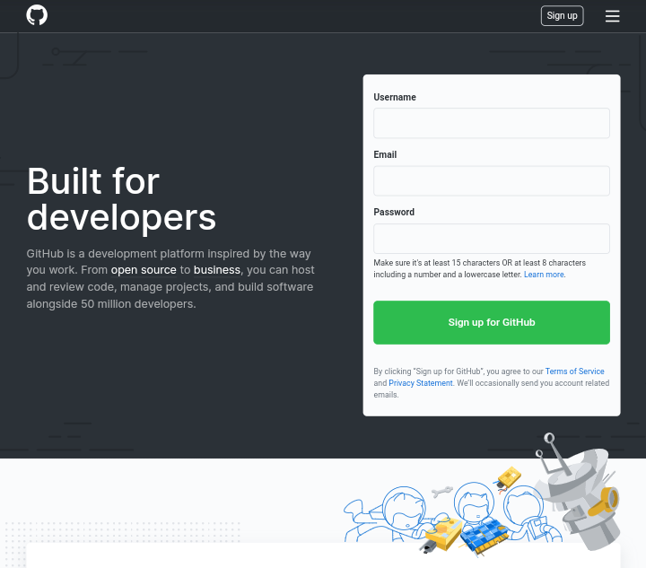
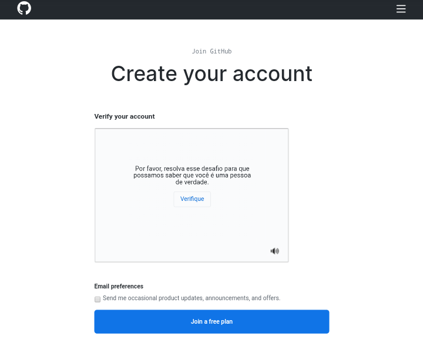
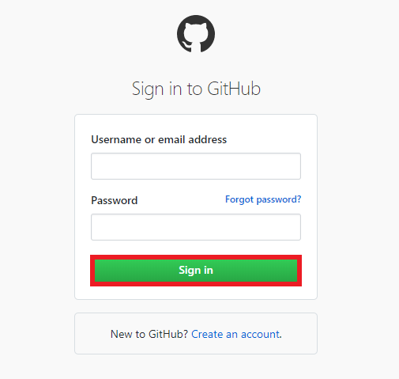

Criar Conta no GitHub
Nesta página, você aprenderá a criar uma conta no GitHub por etapas:
- Acesse o site do GitHub.
- Digite suas informações para fazer o cadastro.
- Verifique sua conta.
- Conclua a pesquisa.
- Verifique a caixa de entrada de seu email.
- Faça o login na conta do GitHub
Em "username" insira um nome para sua conta (será verificado a disponibilidade), em "email" digite seu email de acesso, em "senha" crie uma senha que contenha no máximo de 15 caracteres, contendo pelo menos um número, um caractere especial, letra maiúscula e minúscula.
Será feito um teste de verificação de conta, com opção de receber emails ocasionais de atualizações de produtos, anúncios e ofertas do GitHub. Após o teste e o preenchimento, clique em "join a free plan".
Será redirecioando para uma pesquisa do GitHub, perguntando sobre seus interesses no site, experiência em programação e seu objetivo em usar a plataforma.
Será enviado um email de confirmação de cadastro no GitHub
Digite o seu username ou email, a senha e clique em "sign in".
Pronto! Agora você possui uma conta no GitHub!
Agora desfrute seus projetos com o GitHub!